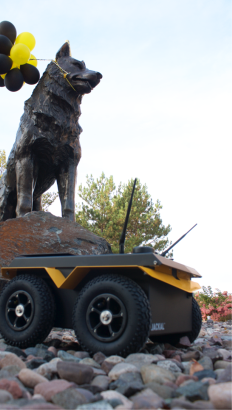
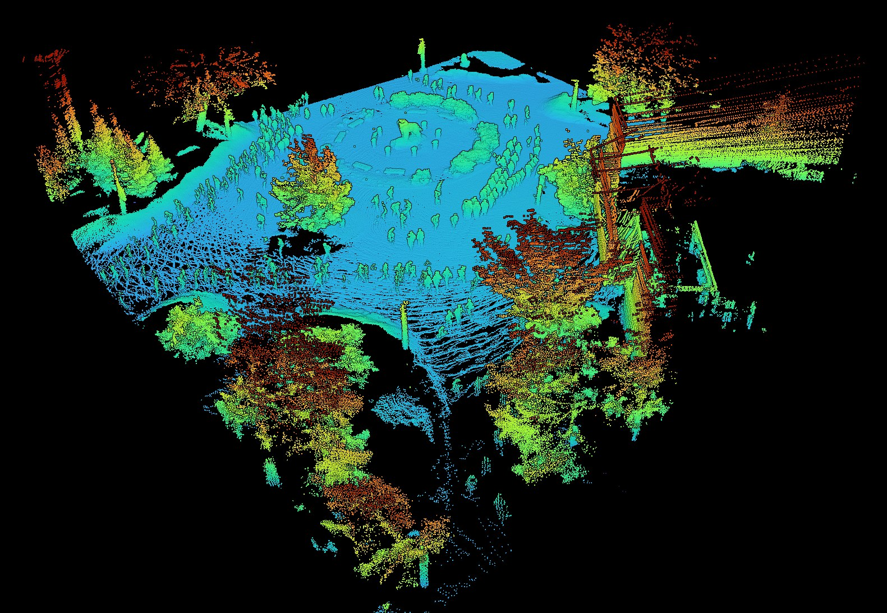

Michigan Tech · Spring 2027
Wanted:
Future Autonomy Stack Engineers.
EE5531 Introduction to Robotics
Transform raw sensor streams into autonomous movement. You will build software to map environments, estimate position under uncertainty, and navigate physical platforms using algorithmic foundations standard in industry.


Built by students: 3D LiDAR map of Husky Plaza, about 2 million pointsReal robots
Clearpath Jackals and TurtleBot3s with LiDAR and IMUs. Not just simulation.
The industry toolchain
ROS 2, Nav2, SLAM, Gazebo, Python, and Git. If you've read an AV job posting, you've seen this list.
The math behind autonomy
Derive a Kalman filter, then watch it pull a drifting robot back on track.
A portfolio you can show
Public GitHub repos with code, maps, and video. Exactly what today's employers expect.
The course follows the loop every autonomous system runs
- ObserveFit a beam model to your own LiDAR
- OrientKalman filters and SLAM maps of real rooms
- DecideNav2 planners, costmaps, and recovery
- ActYour full stack on a Jackal, scored
Where EE5531 alumni work now

…and throughout the autonomous vehicle sector.